Snow reports · Powder alerts
Daily snow reports for skiers: where the snow is, what is coming and where to ski, from the SnowScope snow map and measuring stations. Every number comes from that day's data.


Jackson Hole received 11 in (28 cm) of fresh snow in 72 hours. SnowScope shows 186 resorts with snow across the US West on 22 November.

Where did the most fresh snow fall in the Alps? Fresh snow at Le Reposoir Chalet Neuf: 128 cm in the last 72 hours, including 88 cm in the last 24. …

Jungfraujoch leads Europe with 44 cm in 24 hours; Mount Cain Alpine Park forecast for 132 cm in 72 hours. Forecast from 2026-11-22.


Freezing level reaches 1,500 m at Banff Sunshine Village on November 19. Fresh snow fell across Western Canada in the last 72 hours, but rain threatens the new powder.
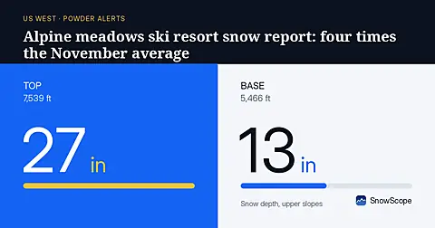
Fresh snow across the US West has built depths well above normal. At Palisades Tahoe Alpine Meadows, upper slopes hold 75 cm (measured 2026-11-18), compared to 10 cm typical for mid-November.

Orelle leads the global forecast with 110 cm in 72 hours. Europe dominates; North America trails. Data from 18 November.

Les Grands Montets saw 74 cm of new snow in the last 72 hours, with more forecast for the coming days, according to our model on November 17, 2026.

Orelle holds 42 cm, close to the typical 53 cm for mid-November. Fresh snow forecast across the Alps over the next three days.

Whistler Blackcomb saw 76 cm of new snow in the last 72 hours, with Mount Cain Alpine Park also receiving 64 cm, as of November 16, 2026.

Despite 60 cm of fresh snow in 72 hours, Scandinavia's mid-November depths are well below average as of 16 November.

Orelle reached 31 cm by 16 November, up 17 cm in one week. The Alps are forecast to get up to 103 cm more snow by 19 November.
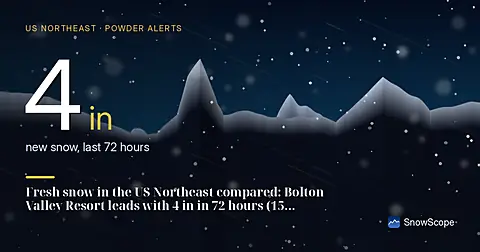
The snow has pulled back since 13 November, from 6,880 sq mi (17,820 km²) to 6,039 sq mi (15,640 km²) today; for 18 November our forecast gives …

Pyrenees snow report, 15 November. Mixed rain and snow: snow is expected only up high, about 7–19 cm near the top of Cauterets Cirque du Lys …

Les Deux Alpes: how much fresh snow fell? 38 cm in 72 hours (15 November). Where did the most fresh snow fall in the Alps? La Grave got 41 cm of new …

Manning Park Resort has 22 percent of normal snow on 2026-11-15, with best historical snow arriving in weeks 12-14, still months away.
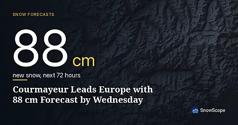
Courmayeur leads forecast with 88 cm in 72 hours; snow depth is at 142 percent of normal for mid-November as of November 15 data.

The white area on the map went from 910 km² (12 November) to 1,100 km² today, and the forecast says 640 km² on 17 November. Mixed rain and snow: snow …

Les Deux Alpes: 38–42 cm of fresh snow in 72 hours (Alps, 14 November). La Grave got 53 cm of new snow in the last 72 hours, 7 cm of it in the last …
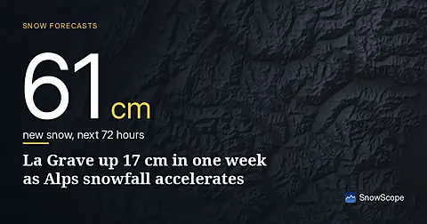
La Grave's snowpack grew 17 cm in a week to 43 cm on 14 November, now forecast to gain 61 cm over the next 72 hours as a system moves across the Alps.

Mt. Shasta Ski Park's upper slopes hold 20 cm (2026-11-13), but the base is bare with rain below 2020 m. Next: 32 cm forecast.

Stratton has 5 in (12 cm) on 2026-11-13 after 72 hours of snow. 28 Northeast resorts now have cover. Small amounts continue; best powder weeks arrive much later.
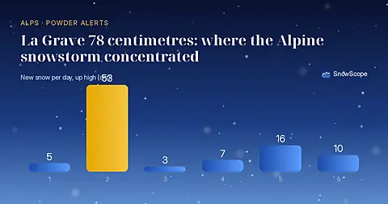
La Grave leads the Alps with 78 centimetres and 61 centimetres of fresh snow in 72 hours, as 33 centimetres more is forecast.

Whistler Blackcomb leads a 72-hour snow surge with 88 cm forecast by November 16, 2026. Major snowfall also expected across the Alps and US Sierra.

Mount Cain Alpine Park fresh snow compared with the region: 15 cm in 72 hours (12 November). The snow cover shrank from 281,250 km² on 10 November to …

Piau-Engaly on 12 November: freezing level at 3060 m brings rain risk despite 16 cm of fresh snow in 72 hours.

Snow-covered area: 45,820 km² on 9 November, 38,440 km² today, 46,730 km² forecast for 14 November. The map is getting less white. Glacier 3000: …

Freezing level climbs to 1870 m on November 13, bringing rain above Tweedsmuir's 1650 m peak. Fresh powder arrived overnight. Data from November 11.

La Grave leads the Alps with 52 cm forecast in 24 hours as of 11 November; early snow arrives weeks before peak accumulation.

A storm on November 4 left 8 to 13 inches of new snow at five high Colorado stations near Aspen. Five days later, half of it was gone. What that means for powder days.

Each day we list the resorts set to get the most new snow, for the next 24 hours and until 13 November, across Europe, Morocco and North America, …


More ground is white now: 0 sq mi (0 km²) on 6 November, 788 sq mi (2,040 km²) today, and 104 sq mi (270 km²) expected on 11 November. Ski Eldorado …

Whistler Blackcomb received 100 cm of fresh snow in 72 hours to 8 November, but it fell unevenly: 96 cm at the summit, none at the base.

Whistler Blackcomb gained 24 cm in one week to 50 cm total; 62 cm more forecast in 72 hours as major storms hit mountains (8 November data).
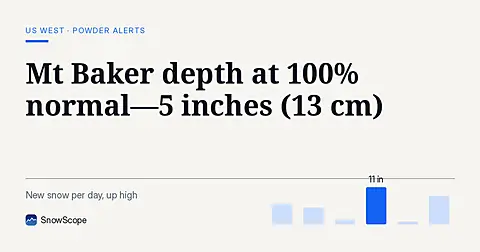
Mt Baker's mid-slopes match the historical snow depth for this date, with fresh powder concentrated in the northern Cascades and Colorado high country.
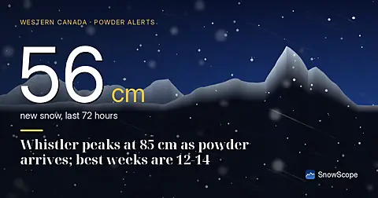
Fresh powder arrives across Western Canada; Whistler leads at 85 cm with 100+ cm forecast ahead, though peak weeks are 12-14 (late March-April).

Artesina got 44 cm of new snow in the last 72 hours. It now has about 20 cm on its upper slopes.

Today's table ranks the resorts of Europe, Morocco and North America by new snow forecast for the next 24 hours and until 10 November, with the snow …

Freezing level forecast to 2140 m on 7 November brings rain to upper slopes at Ski Callaghan in Western Canada, despite fresh powder this week.

Mt Baker got 11 in (27 cm) of new snow in the last 72 hours, 4 in (11 cm) of it in the last 24 hours. It now has about 19 in (47 cm) on its upper …
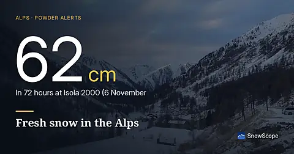
Isola 2000 got 62 cm of new snow in the last 72 hours, 7 cm of it in the last 24 hours. It now has about 19 cm on its upper slopes, according to our …
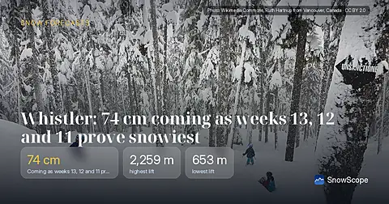
Whistler Blackcomb forecast: 74 cm in 72 hours; weeks 13, 12, 11 bring the year's deepest snow historically. Forecast from 5 November.
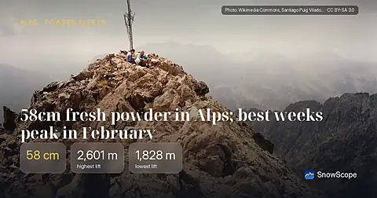
58 centimetres of fresh snow fell across the southern Alps in 72 hours; best powder weeks peak in February, data from 5 November.
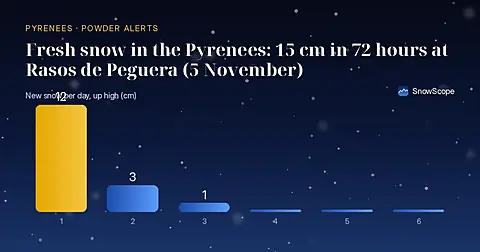
Rasos de Peguera got 15 cm of new snow in the last 72 hours. It now has about 20 cm on its upper slopes.

Whistler Blackcomb sits at 27 cm on 5 November, only 41 per cent of normal for this date. A major system brings 22 cm snow in the next 24 hours.

Telluride got 12 in (31 cm) of new snow in the last 72 hours, 1 in (3 cm) of it in the last 24 hours. It now has about 46 in (118 cm) on its upper …
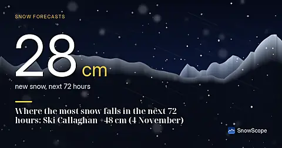
Today's table ranks the resorts of Europe, Morocco and North America by new snow forecast for the next 24 hours and until 7 November, with the snow …

The freezing level reaches 2980 m on November 6, bringing rain to consolidate 21 cm of recent snow at Kope (data from November 3).

Oukaimden got 14 cm of new snow in the last 72 hours, 5 cm of it in the last 24 hours. It now has about 3 cm on its upper slopes, according to our …

Rasos de Peguera got 17 cm of new snow in the last 72 hours, 17 cm of it in the last 24 hours. It now has about 13 cm on its upper slopes, according …

Silverton Mountain's 92 cm—deeper than all 46 past Novembers—arrived in just 72 hours; measured November 1st, 2026.
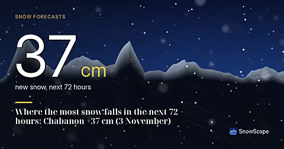
Each day we list the resorts set to get the most new snow, for the next 24 hours and until 6 November, across Europe, Morocco and North America, …